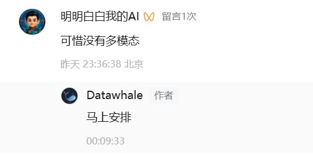
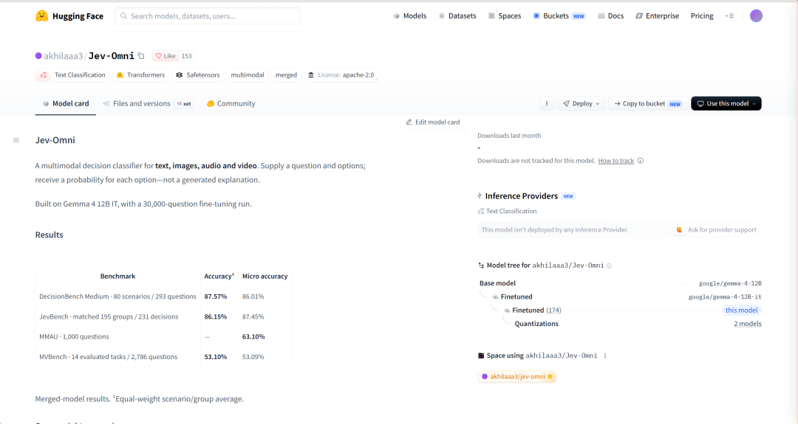
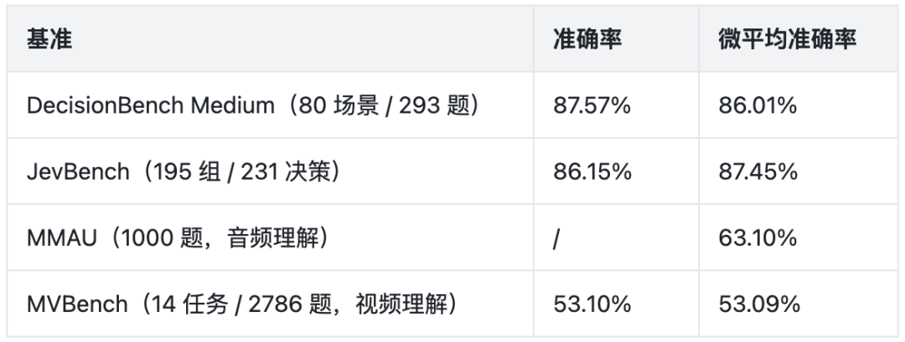
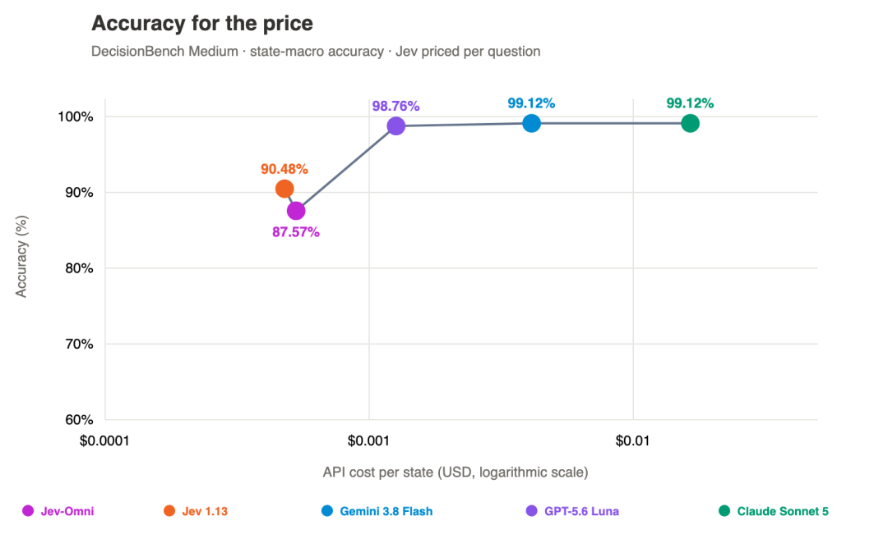
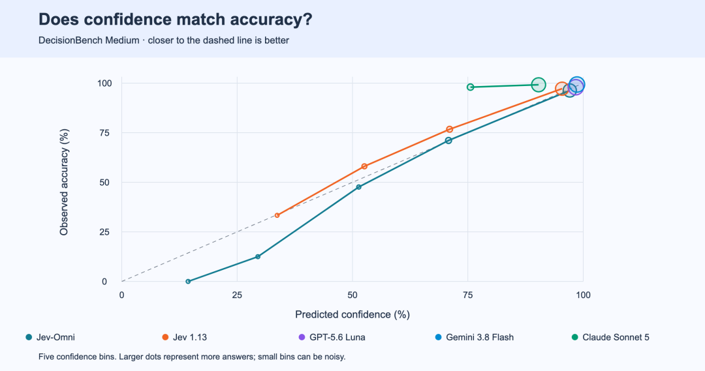
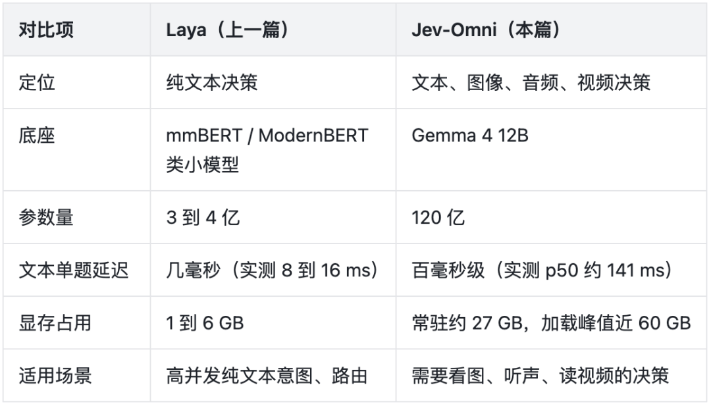
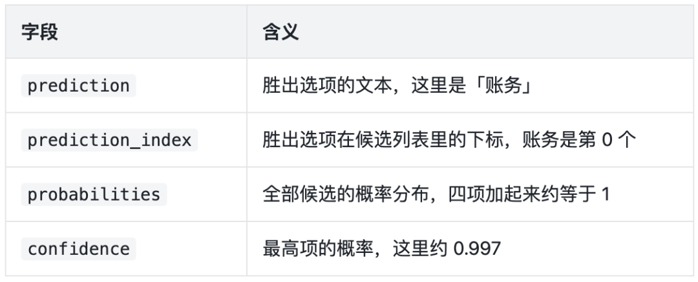
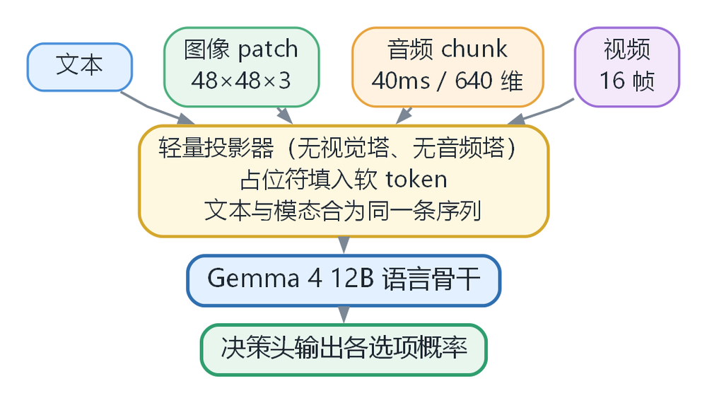
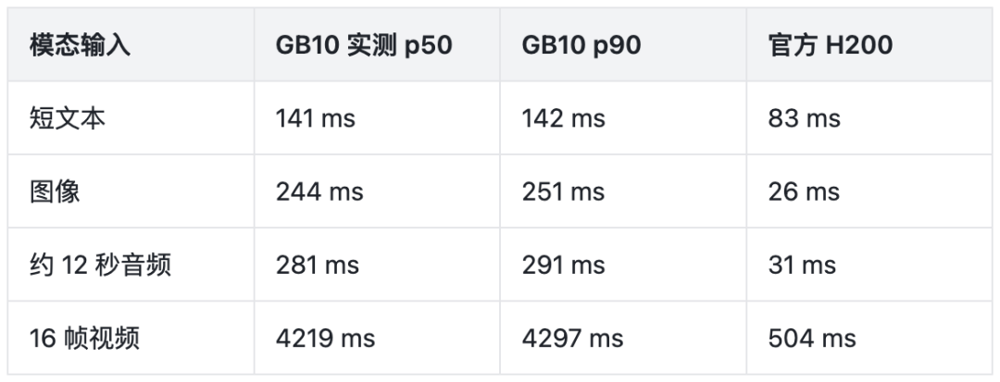
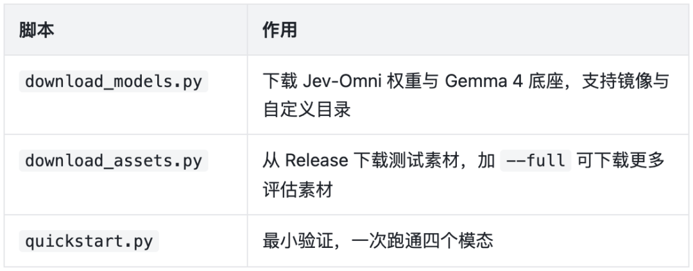

给Jev装上眼睛！多模态Jev部署教程发布！
来源：微信公众号 归档日期：2026-11-08 抓取状态：成功 原文字符：7787｜配图：11 张
摘要速览
- Datawhale 多模态 Jev 部署教程：在本地跑起来支持文本、图像、音频、视频四类输入的多模态 Jev 版本，覆盖视频审核看画面、质检听设备声音、监控判断镜头里有没有人等纯文本无法覆盖的场景。基于 Akhila 开源的 Jev-Omni 多模态决策模型，输入当前状态、问题和候选选项后，模型不输出长解释，直接返回每个选项的概率分布，用于分类、路由和动作选择。
核心内容
（待补充）
可执行启发
（待补充）
我的想法
（待补充）
原文沉淀
目录
Datawhale干货
****部署教程：多模态Jev ****
上一篇开源版 Jev 的教程发出去后，有读者在评论区留言说「可惜没有多模态」。

那必须安排。这篇就带大家在本地把多模态版本的 Jev 跑起来，文本、图像、音频、视频都能测。
实际业务里这类需求很常见，比如视频审核要看画面、质检要听设备声音、监控要判断镜头里有没有人，只读纯文本无法覆盖这些场景。
最近开发者 Akhila 开源了 Jev-Omni 多模态决策模型，统一支持文本、图像、音频与视频四类输入。它的用法与 Jev 类似，输入当前状态、问题和候选选项后，模型不输出长解释，直接返回每个选项的概率分布，用于分类、路由和动作选择。
这篇文章先说明 Jev-Omni 的定位以及它与上一篇 Laya 的核心差异，再按步骤演示如何在本地跑通四个模态的测试，最后解析它如何用单一模型支持四种模态。文中的延迟与显存数据，均在一张 GB10 算力卡（121 GB 统一内存，驱动 580.173.02，Python 3.12，PyTorch 2.14）上实测采集。
安装命令、测试脚本和全部执行日志均已收录在实验仓库，读者可以直接克隆跟着操作。显存或内存不足、只想查看运行结果的读者，可以直接查阅仓库中的执行日志，无需下载模型权重。
-
实验地址：https://github.com/li-xiu-qi/XiaokeAILabs/tree/main/experiments/test_jev_open_source/jevomni多模态版的决策模型：Jev-Omni
Jev-Omni 是一款面向多模态输入做判别的决策模型。相比纯文本的 Jev，它拓展了输入维度，能直接接收图像、音频与视频输入并给出分类判断。

它在 Gemma 4 12B IT 底座的基础上完成了约 3 万题微调，官方给出的基准测试成绩如下：

模型卡提供了一张性价比对比图，横轴为每个 state 的 API 成本（对数轴），纵轴为准确率，将其与 Jev 1.13、Gemini 3.8 Flash、GPT-5.6 Luna、Claude Sonnet 5 进行了横向对比。

这个模型的定位不是在所有指标上追上大模型，而是在成本敏感、需要高频调用的场景里，用可接受的概率判断替代逐 token 生成。近九成的准确率配上极低的单次调用成本，在这类任务里有它独特的工程价值。
校准表现上，DecisionBench Medium 上的 ECE 为 0.04（数值越低代表预测概率越贴近实际发生频率）。曲线基本落在对角线上，说明模型给出 0.9 置信度时，实际大约就是 0.9 的把握。正因为预测置信度与真实频率高度契合，业务系统可以直接把输出概率作为门控阈值，不需要额外换算。模型卡用一张校准曲线展示了这一特性。

很多读者容易将 Jev-Omni 与上一篇介绍的 Laya 混淆，下表梳理了两者在架构与定位上的关键区别。

简单来说，追求极致低延迟与高并发的纯文本判定选择 Laya；需要兼顾多模态输入且能接受百毫秒至秒级延迟的场景，则选择 Jev-Omni。
保姆级部署跑通流程
第一步，环境准备
部署 Jev-Omni 需要配置 CUDA 显卡，官方参考加载器暂不支持纯 CPU 运行。由于 FP32 分发的决策骨干权重约 48 GB，叠加约 24 GB 的底座模型，加载阶段的内存峰值接近 60 GB，建议准备 60 GB 以上可用显存或内存，统一内存架构设备可正常运行。除 CUDA 驱动外，系统还要装好 ffmpeg，音频和视频预处理都需要它。运行环境要求 Python 3.10 以上，本次实测版本为 3.12。
建议新建独立的虚拟环境。终端执行命令如下（Windows 环境将第二行替换为 .venvScriptsactivate）。
- - -
# 创建并激活虚拟环境
python -m venv .venv
source .venv/bin/activate依赖清单 requirements.txt 可直接从实验仓库下载。若不使用命令行，也可以在浏览器打开对应链接另存为文件。
-
https://raw.githubusercontent.com/li-xiu-qi/XiaokeAILabs/main/experiments/test_jev_open_source/jevomni/requirements.txt若国内网络拉取 raw 链接遇到网络阻碍，可附加 GitHub 代理加速前缀下载。
-
curl -L -o requirements.txt https://ghfast.top/https://raw.githubusercontent.com/li-xiu-qi/XiaokeAILabs/main/experiments/test_jev_open_source/jevomni/requirements.txt获取依赖文件后执行安装。
-
pip install -r requirements.txt环境依赖中有两项版本约束需要严格对齐。transformers 必须安装 5.17.0 版本，底座 Gemma 4 的模型结构在更低版本中无法被识别导入；torch 与 torchvision 则建议结合本机 CUDA 驱动版本安装匹配构建。
从 HuggingFace 官方源拉取权重若速度受限，可配置国内镜像源地址。新版下载客户端默认启用的 Xet 传输协议在部分镜像站暂未支持，可能引发 401 报错，因此需配置环境变量回退到常规下载模式。
- -
export HF_ENDPOINT=https://hf-mirror.com
export HF_HUB_DISABLE_XET=1第二步，下载权重
模型权重总计约 72 GB，包含 Jev-Omni 的 48 GB FP32 决策骨干（共 13 个分片）以及 24 GB 的 Gemma 4 底座（BF16 格式）。实验仓库提供了自动化下载脚本，国内环境可附带 --mirror 参数使用镜像节点。
-
python scripts/download_models.py --mirror若需将权重归档至自定义目录，可指定 --target-dir 参数，后续在验证脚本中传入匹配的 --models-dir 即可准确定位。
由于权重总计达七十余 GB，直接纳入代码仓库会导致克隆极其缓慢，因此仓库未打包存储权重文件。运行下载脚本后，文件会自动保存至 models/ 目录（未声明 --target-dir 时则保存在 HuggingFace 默认缓存目录）。
第三步，准备测试素材
为兼顾仓库分发效率，图像、音频与视频等测试素材同样通过脚本在运行时拉取。
-
python scripts/download_assets.py脚本执行完成后，assets/ 目录下将准备好三组免费且可商用的独立素材，分别是虎斑猫照片 cat.jpg、约 12 秒的英文双人对话音频 conversation.mp3 以及约 19 秒的人物近景视频 person-reading.mp4。
三组素材分别对应图像、音频与视频模态，各自来自独立文件而非同一段视频的切片截取，保证了各模态输入测试的真实性。素材来源于 Flickr、Freesound 与 Pexels 开源集，由实验仓库 Release 统一分发，下载过程中包含哈希校验。
如需执行更全面的基准评测，给脚本追加 --full 参数，可在 assets/eval/ 路径下扩充 10 类图片和 3 段音频测试集。
-
python scripts/download_assets.py --full第四步，最小验证
完成环境配置、权重就绪与素材准备后，执行最小验证脚本。该脚本仅加载一次模型，随后依次遍历四个模态的样例。执行前请确认 ffmpeg 已正确配置至环境变量 PATH。
-
python scripts/quickstart.py初次运行需要将 48 GB 的 FP32 分片载入内存，实测模型加载耗时约 8 分钟（423 到 449 秒），时间开销主要集中在磁盘读取阶段。加载完成后，终端将依次输出五个测试用例的判定结果。
看懂返回结果
以中文工单分类用例为例，调用代码传入的三个核心参数分别为状态描述、问题文本以及备选候选集合。
- - - - -
clf.predict(
state="我这个月信用卡被扣了两次费，请尽快把多扣的钱退给我",
question="这个请求应该由哪个部门处理？",
options=["账务", "技术", "销售", "其他"],
)输入数据结构为标准的「状态 + 问题 + 固定选项」。模型不展开生成解释文本，仅在给定候选中计算各选项的后验概率。在 GB10 算力卡上的输出格式如下。
- - - - - - - - - - -
{
"prediction": "账务",
"prediction_index": 0,
"confidence": 0.997093677520752,
"probabilities": {
"账务": 0.997093677520752,
"技术": 0.000299832783639431,
"销售": 0.0003560602490324527,
"其他": 0.002250370336696055
}
}返回对象为原生结构化字典，业务端可以直接提取键值，无需额外编写正则匹配规则，也不必防范 JSON 解析语法异常。主要字段定义如下表所示。

在工程落地中，confidence 是最核心的判断依据，可以直接用作业务流转门槛。置信度达到设定阈值时执行自动化路由，置信度不足时交由大模型二次判别或回退至人工审核。
在 GB10 上实测，文本、图像、音频单次推理耗时均在 1 秒以内；视频用例需要处理 16 帧，单次耗时约 4 秒。首次推理因模型预热开销耗时稍长，生产调用前建议先空跑一条预热。完整计时明细可查阅实验仓库的执行日志。
一个模型怎么支持四种模态
Jev-Omni 的多模态能力来自 Gemma 4 底座。文本、图像、音频与视频输入先各自经过一个轻量投影器，转化为统一维度的 token 表示。随后这些 token 和文本拼进同一条序列，送入同一个底座语言模型中。最终由顶层的分类头给出各选项的置信概率。这种设计没有采用独立的重量级视觉塔或音频编码塔，多模态前端变换非常轻量，端到端延迟很低，取舍在于对高复杂度图像或超长音频的深层特征抽取能力相对有限。

各模态在硬件上的推理延迟如下表所示，表中包含 GB10 平台的分位数实测数据与官方公布的 H200 基准数据对比参考。

官方基准测算基于 H200 硬件平台且启用了优化后端推理环境，仅统计预热后的核心中位数耗时，未计入系统预处理与网络传输开销。GB10 与 H200 本就不是同一档硬件，两者的延迟差距主要来自算力规格的不同。
实验仓库与脚本
文中涉及的测试脚本、配置清单与实测终端日志均已整理至实验仓库，克隆仓库后即可按步骤完整复现实验过程。
- -
git clone https://github.com/li-xiu-qi/XiaokeAILabs.git
cd XiaokeAILabs/experiments/test_jev_open_source/jevomni仓库核心脚本清单如下表所示。

仓库内仅包含代码与文档。按上述步骤执行脚本后，会在本地自动创建并填充 models/、assets/ 和 results/ 目录。此外，仓库中还包含延迟基准测试与批量评估脚本，全部脚本的原始终端运行日志保存在 experiments/test_jev_open_source/docs/执行日志/。
写在最后
多模态决策是个挺实际的需求，比如判断画面里有没有人、声音是不是异常、镜头有没有移动，这类问题选项明确、要的就是一个带置信度的判断，不需要一段生成式描述。Jev-Omni 把文本、图像、音频、视频统一到同一个决策接口，又开放了权重，让我们能在本地低成本地验证这些想法。
它当然不是万能的，更适合那些选项明确、要的是一个带置信度判断的场景。建议大家先把环境搭好、最小脚本跑通，再换成自己的真实素材测一测，决定它在流水线里承担什么角色。
一起“点赞”三连↓
归属：[[02-输入/按主题/AI与效率/_index|AI与效率]]